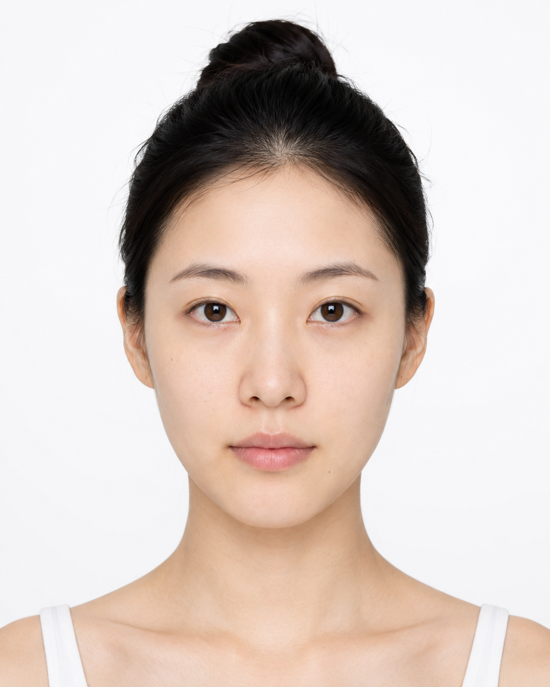

👁️ 眼部区域
点击面部不同区域探索对应的医美项目

本项目从历史学、社会学与医学人类学视角，审视东亚女性面部医美实践。不推销任何医美项目，不评判任何个人选择——仅呈现审美标准如何在权力、资本与文化的交织中被建构、传播与内化。五个部位的审美演变时间轴，是一部微观的东亚女性身体规训史。
不推销、不评判。本项目不构成任何医美推荐或诊疗建议。所有信息仅用于教育与学术研究目的。
客观记录。每一例手术卡片均包含用户真实反馈、材料优缺点、风险清单。呈现全貌，而非选择性叙事。
合规严谨。仅收录 NMPA 获批材料，手术分级按上海卫健委标准。未收录非法材料与未获批项目。